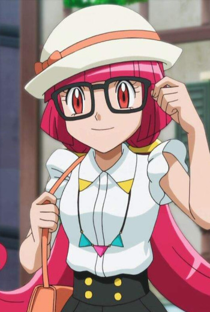
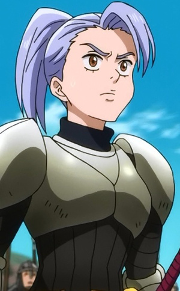

|  |
Aria |
|
Aria is a famous Pokemon Performer and current Kalos Queen. she is joyful, energetic, and cheerful. She knows ho to motivate and inspire people. |
|  |
Jericho |
- The Seven Deadly Sins
- The Seven Deadly Sins OVA
- The Seven Deadly Sins: Signs of Holy War
- The Seven Deadly Sins: Revival of The Commandments
|
Jericho is an apprentice Holy Knight. She is proud and serious individual. She is arrogant at times. She an older brother Gustaf. Jericho is to have low esteem and possibly an inferiority complex. |
 |
Malva |
|
Malva is an elite four member of the Kalos elite four and a former Team Flare member. |
 |
Mari Watanabe |
- The Irregular at Magic High School
- The Irregular at Magic High School: Get to Know Magic Studies!
- The Irregular at Magic High School The Movie - The Girl Who Summons The Stars
|
Mari Watanabe is the Moral Committe chairman of the First High School. Mari is a strict, resilient, and outspoken young woman. She is patient in handling matters, but harsh sometimes. |